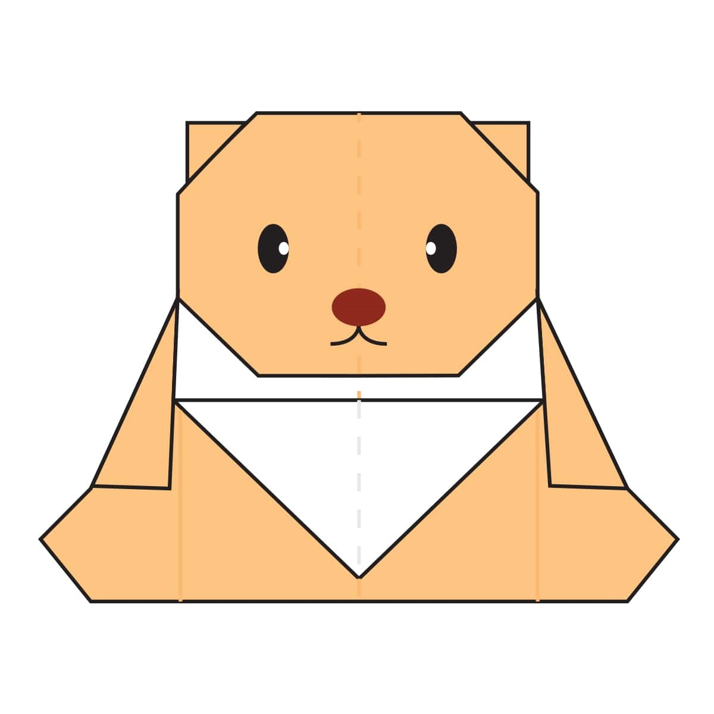

Origami Designs
About Us
Follow Us

Interesting facts about camel
- Camel's ears are furry.
- Camels can move easily on sand beause of it's specially designed feets.
- When they find water, they'll drink as much as possible.

Interesting facts about chemeleon
- There are around 160 species of chameleon.
- Chameleons live in warm varied habitats from rainforests through to deserts.
- With their independently moving eyes and ability to change color, chameleons can seem to be from another planet.

Interesting facts about pigeon
- Pigeons are incredibly complex and intelligent animals.
- Pigeons are renowned for their outstanding navigational abilities.
- Pigeons have excellent hearing abilities.
Interesting facts about panda
- The giant panda’s having black and white coat is one of the shyest and rarest animals in the world.
- They used to resemble a bear but in fact, they have a strong liking towards racoons.
- It is believed that pandas have lived on Earth for two to three million years.

Interesting facts about flying cicada
- There are about 3,000 known species of cicadas worldwide.
- The female cicada is about 2 inches long, but the male is two times smaller than the female.
- Some cicada calls can be heard up to 1 mile (1.5 kilometer) away.

Interesting facts about teddy bear
- The arms, heads and legs of Teddy Bears are attached using the safety joints.
- Thus, Most Teddy Bears are marketed for children, they should be safe.
- There are many horror stories related to Teddy Bears.